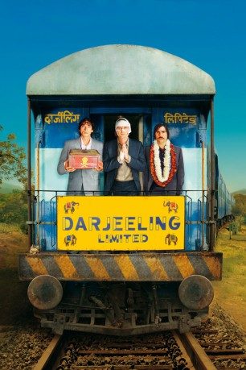
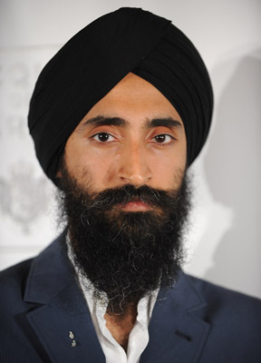
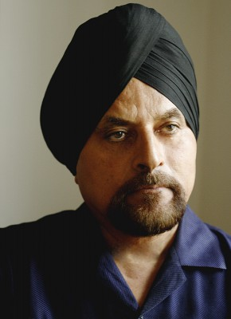

#1809 Darjeeling Limited
Alternativ: The Darjeeling Limited
 
 IMDB-Wertung: 7.2 / 10
IMDB-Wertung: 7.2 / 10  Metascore: 67
Metascore: 67 
Nachdem sich die ungleichen Brüder Francis, Peter und Jack bereits seit langem auseinander gelebt haben, soll sie das Erlebnis einer gemeinsamen Zugreise durch Indien wieder vereinen. Bei ihrem spirituellen Trip durch Indien kommen sie allerdings ziemlich schnell vom Kurs ab - unvorsehbare Ereignisse rund um Giftschlangen, rezeptfreie Schmerzmittel, indischen Hustensaft und Pfefferspray stören die meditative Ruhe. Zuletzt finden sich die Brüder völlig allein mit ihren elf Koffern, einem Drucker und einem Laminiergerät mitten in der Wüste wieder. Und dies ist der Beginn einer völlig neuen Reise ...
Jahr: 2007
Dauer: 91 Minuten
FSK: 6
Land: USA Studio: Fox Searchlight PicturesTonspuren: DTS - ,
Untertitel:
Auflösung: 1080p (1920x800) Größe: 5376 MB
Genre: Abenteuer, Komödie, Drama
Regisseur:  Wes Anderson
Wes Anderson
Drehbuch: Wes Anderson, Roman Coppola, Jason Schwartzman
Soundtrack:
Darsteller:
 Owen Wilson als Francis
Owen Wilson als Francis- Adrien Brody als Peter
 Jason Schwartzman als Jack
Jason Schwartzman als Jack- Amara Karan als Rita
 Wallace Wolodarsky als Brendan
Wallace Wolodarsky als Brendan-  Waris Ahluwalia als The Chief Steward
 Irrfan Khan als The Father
Irrfan Khan als The Father- Barbet Schroeder als The Mechanic
 Camilla Rutherford als Alice
Camilla Rutherford als Alice- Bill Murray als The Businessman
 Anjelica Huston als Patricia
Anjelica Huston als Patricia Kumar Pallana als Old Man
Kumar Pallana als Old Man- John Joseph Gallagher als Tow Truck Driver
-  Gurdeep Singh als Chief Steward - Bengal Lancer
 Natalie Portman als Jack's Ex-Girlfriend
Natalie Portman als Jack's Ex-Girlfriend- A.P. Singh als Taxi Driver
- Dalpat Singh als Waiter
- Trudy Matthys als German Lady #1
- Margot Gödrös als German Lady #2
- Hitesh Sindi als Electronics Vendor
- Kishen Lal als Shoe Vendor
- Bhawani Sankar als Pepper Spray Vendor
- Mukhtiar Bhai als Pet Shop Vendor
- Suraj Kumar als Shoeshine Boy
- Kapil Dubey als Boy on Bicycle
- Mulchand Dedhia als Engineer
- Dinesh Bishnoi als Oldest Boy
- Mukesh Bishnoi als Middle Boy
- Ramesh Bishnoi als Youngest Boy
- Sriharsh Sharma als Boy with Handkerchief
- Chanduram Bishnoi als Village Elder
- Sajjanji Bishnoi als Doctor
- Pukaram Bishnoi als Old Man in Village
- Shushila Devi als Mother
- Ratan Lal Ji als Villager
- Arun Bishnoi als Villager
- Jhalaram Bishnoi als Villager
- Mularam Bishnoi als Villager
- Anand Pathe als Villager
- Bhawar Lal als Villager
- Kaana Ram als Villager
- Rupa Ram als Villager
- Shava Ram als Villager
- Ruka Ram als Villager
- Bhura Ram als Villager
- Buramji Ram als Villager
- Tuka Ram als Villager
- Bhanwar Singh als Villager
- Bhanwar Paliwal als Villager
- Moti Ram als Villager
Datei: X:\2007(A-F)\Darjeeling Limited (2007, FSK6, 1920x800).mkv seit 25.08.2015
Festplatte: HD 2007(A-Z)-2008(A-F)
 Es gibt insgesamt 65 Filme in der Gruppe '2007(A-F)'
Es gibt insgesamt 65 Filme in der Gruppe '2007(A-F)'